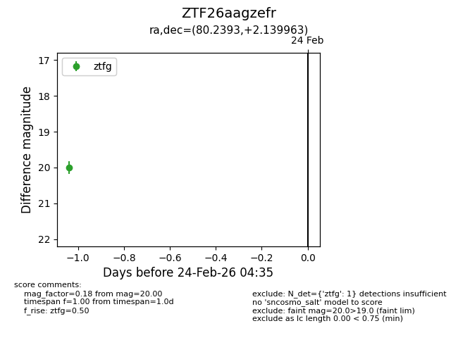
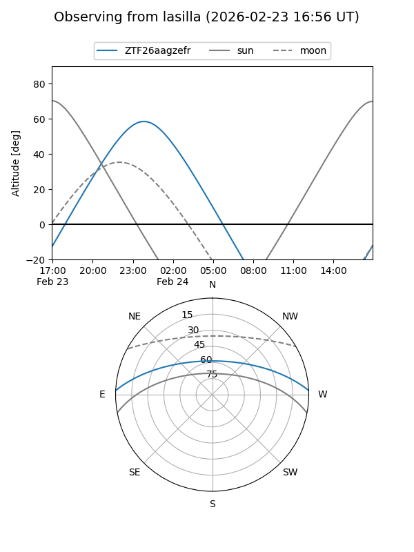
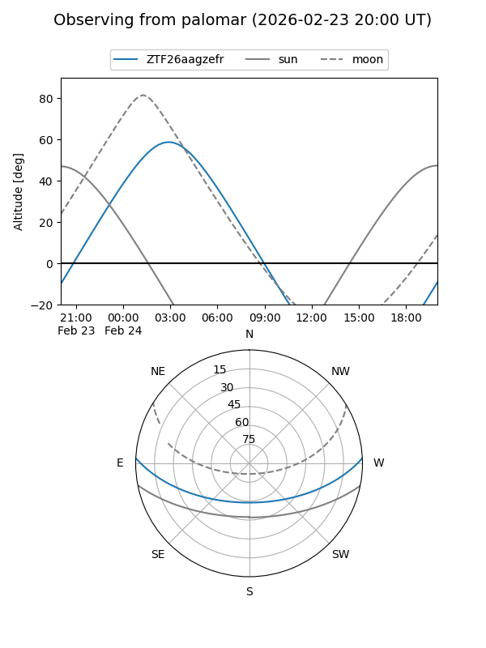

ZTF26aagzefr
Target ZTF26aagzefr at 2026-02-24 09:08
Aliases and brokers:
FINK: link
Lasair: link
ALeRCE: link
alt names
ZTF26aagzefr (ztf,fink_ztf)
Coordinates:
equatorial (ra, dec) = 80.2393,+2.13996
equatorial (HMS+DMS) = 05:20:57.44,+02:08:23.87
galactic (l, b) = (200.1957,-18.96810)
Flags:
Photometry:
last ztfg=20.00
1 ztfg detections
Lightcurve

Visibility


Additional plots